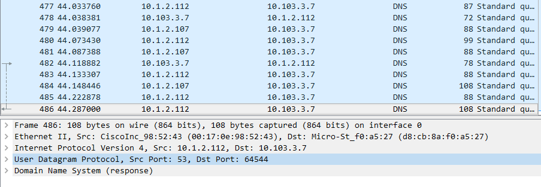
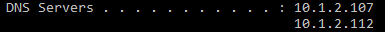
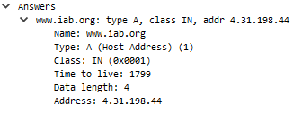

4. Locate the DNS query and response messages. Are they sent over UDP or TCP?
They are sent over UDP.
5. What is the destination port for the DNS query message? What is the source port of DNS response message?
The destination port for the DNS query and the source port for the DNS reponse is port number 53.

6. To what IP address is the DNS query message sent? Use ipconfig to determine the IP address of your local
DNS server. Are these two IP addresses the same?
The DNS query message is being sent to 10.1.2.107 and 10.1.2.112. The IP addresses of the local DNS server
are 10.1.2.107 and 10.1.2.112.

7. Examine the DNS query message. What "Type" of DNS query is it? Does the message query contain any "answers"?
It is a Type A DNS Query. The message query does not contain any answers.
8. Examine the DNS response message. How many "answers" are provided? What do each of these answers contain?
In the DNS response message, there is one answer provided. They contain information about the name of the host, the
type of address, class, time-to-live, data-length, and IP address.

9. Consider the subsequent TCP SYN packet sent by your host. Does the destination IP address of the SYN
packet correspond to any of the IP addresses provided in the DNS response message?
I did not find any correlation between IP addresses.
10. This web page contains images. Before retrieving each image, does your host issue new DNS queries?
It does not issue new DNS queries.
Book Questions
CH2-R13: Describe how Web caching can reduce the delay in receiving a requested object. Will Web caching reduce
the delay for all objects requested by a user or for only some of the objects? Why?
Web caching reduces delay by temporarily storing information to be retrieved before sending a request to the web host.
It reduces the delay for all objects because it minimizes travel time for the data that is not cached.
CH3-R4: Describe why an application developer might choose to run an application
over UDP rather than TCP.
An application developer may choose UDP over TCP because of the congestion-control that can throttle the application's
sending rate at times of congestion. Another reason they may choose UDP over TCP is the lack of necessity for a reliable
data transfer protocol.
Questions
What are the three classes of DNS servers, and how do they interact?
At the highest level, there are Root servers, then Top-Level Domain servers, then Authoritative servers. A client would first
contact the root servers, which returns the IP addresses for the TLD servers. Then the client contacts one of the TLD servers,
which returns the IP address of an authoritative server. The client can then retrieve IP address for the hostname from the
authoritative server.
What is the difference between a positive and negative acknowledgement?
Acknowledgements allow the receiver to let the sender know what has been received correctly or in error. Acknowledgements
that have been recieved correctly are known as positive acknowledgements. Acknowledgements that have been received in
error are known as negative acknowledgments.
What are multiplexing and demultiplexing?
Multiplexing is the job of gathering data chunks at the source host from different sockets, encapsulating each data
chunk with header information to create segments, and passing the segments to the network layer. Demultiplexing is
the job of delivering the data in a transport-layer segment to the correct socket.
What are the three phases in a virtual circuit, and how do they work?
Setup, Data Transfer, Teardown.
In the setup, the transport-layer contacts the network-layer, specifies the receiver's
address, and waits for the network to set up the virtual circuit. The network-layer determines the path between sender
and receiver, the virtual circuit numbers, adds the entry into the forwarding table, and possibly reserve network
resources.
Next, the data is transferred.
Teardown is initiated when the sender or receiver informs the network-layer
of its desire to terminate the virtual circuit. It then informs the other end system of the call for termination, and
updates the forwarding tables to indicate the virtual circuit no longer exists.
What is the purpose of a sequence number?
Sequence numbers allow the receiver to detect problems with data transfer. Packets that skip a sequence number mean that there is a lost
packet. Packets with duplicate sequence numbers mean that there was a retransmission or duplicate packet.
What is the purpose of a timer?
A timer is used to timeout or retransmit a packet because the packet was lost or delayed within the channel.
What is a three-way handshake?
A three-way handshake is used in TCP/IP to create a connection between client and server where the client and server exchange
SYN and ACK packets before actual data communication begins.
TCP uses acknowledgements to trigger its increase in congestion window size. What is the term used to describe this?
Self-clocking.
What does a payload field hold?
A payload field holds a packet from the protocol layer above it.
In Wireshark, what do you type in the display filter if you only wanted to see the HTTP packets coming from
the IP address 192.168.0.129?